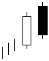

تحلیل تکنیکال
الگوهای کندل استیک ها
الگوهای برگشتی نزولی
Dark Cloud Cover

در این الگو (پوشای ابر مشکی) شاهد دو شمع با رنگ های متفاوت هستیم در شمع اول بدنه سفید (صعودی) و شمع دوم
بدنه ای مشکی (نزولی) با نقطه پایانی بالاتر از نقطه آغازین شمع قبلی می بینیم و نقطه آغاز شمع دوم با شکافی صعودی
نسبت به پایان شمع اول شروع شده است. این الگو در انتهای روند صعودی تشکیل شده و نمایشگر آغاز روند نزولی می باشد.